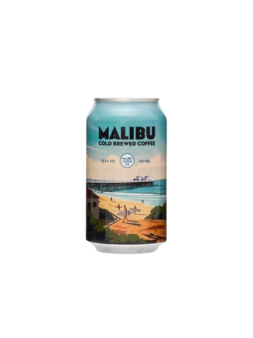
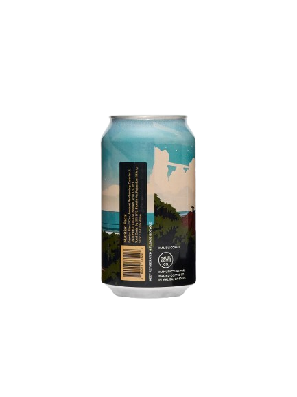

Scroll down to see the hero section
 
COLD BREW.
Experience the rotation
Buy now
Keep scrolling to test the effect
Rotation Debug
Scroll Progress:
0
%
Rotation:
0
°
Mouse X:
-
Hover Active:
No
How to Test
Scroll up/down to rotate via scroll
Move mouse over hero to rotate via hover
Place your can-front.jpg and can-back.jpg images in the same folder as this HTML file
Or update the src paths in the HTML to point to your image locations